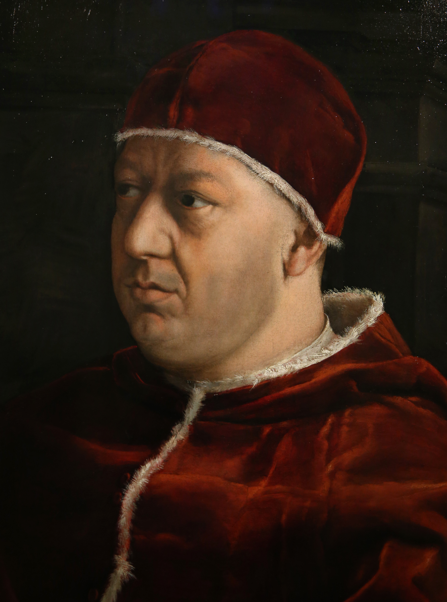

Leone X, papa dal 1513, governò durante la nascita della Riforma. Fu criticato per il lusso della corte papale e per la vendita delle indulgenze, che contribuì al malcontento religioso.
Condannò le 95 tesi di Lutero e nel 1521 lo scomunicò con la bolla "Decet Romanum Pontificem". Tuttavia non comprese subito la portata del movimento riformatore.
Leone X non avviò ancora la Controriforma, ma il suo pontificato segnò l'inizio della crisi che porterà la Chiesa a riformarsi profondamente con il Concilio di Trento.